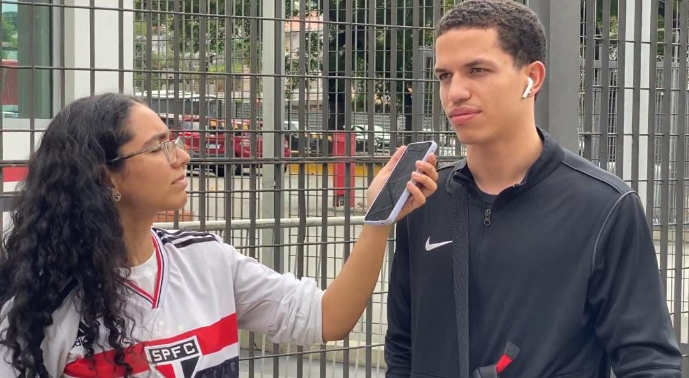

O QUE É O PROJETO?

Buscamos apresentar uma outra perspectiva sobre as Torcidas Organizadas e sua Visão Perante a Sociedade como um todo, pois desde seu inicio as torcidas sofrem com o preconceito e o constante ataque da mídia.

Fizemos diversas entrevistas com os Lideres das Torcidas Organizadas, membros e torcedores, além de cobrir alguns eventos e ações sociais que são ocultados das noticias.